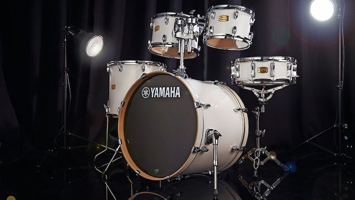
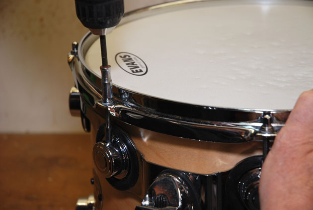
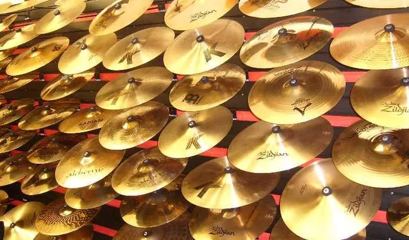

Conheça os 5 tipos de baquetas usadas na bateria
Descubra as diferentes características, funções e usos de cada baqueta
BATERIA

Como escolher sua 1ª bateria corretamente
– 01/03/2014
Tudo que você precisa saber antes de comprar sua primeira bateria
PELES

Saiba tudo sobre peles de bateria
– 27/03/2014
Aprenda sobre os tipos de peles, como e quando trocá-las, como afiná-las e muito mais
PRATOS

Guia completo sobre pratos de bateria
– 17/03/2014
Saiba mais sobre sonoridade, material, marcas, tipos de pratos e muito mais